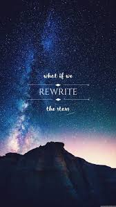

You know I want you
It's not a secret I try to hide
I know you want me
So don't keep sayin' our hands are tied
You claim it's not in the cards
And fate is pullin' you miles away
And out of reach from me
But you're here in my heart
So who can stop me if I decide
That you're my destiny?
What if we rewrite the stars?
Say you were made to be mine
Nothing could keep us apart
You'd be the one I was meant to find
It's up to you, and it's up to me
No one can say what we get to be
So why don't we rewrite the stars?
Maybe the world could be ours
Tonight
You think it's easy
You think I don't wanna run to you
But there are mountains
And there are doors that we can't walk through
I know you're wondering why because we're able to be
Just you and me within these walls
But when we go outside, you're gonna wake up and see
That it was hopeless after all
No one can rewrite the stars
How can you say you'll be mine?
Everything keeps us apart
And I'm not the one you were meant to find
It's not up to you
It's not up to me
When everyone tells us what we can be
How can we rewrite the stars?
Say that the world can be ours
Tonight
All I want is to fly with you
All I want is to fall with you
So just give me all of you
It feels impossible
It's not impossible
Is it impossible?
Say that it's possible
How do we rewrite the stars?
Say you were made to be mine?
Nothing can keep us apart
'Cause you are the one I was meant to find
It's up to you
And it's up to me
No one can say what we get to be
And why don't we rewrite the stars?
Changing the world to be ours
You know I want you
It's not a secret I try to hide
But I can't have you
We're bound to break and my hands are tied
